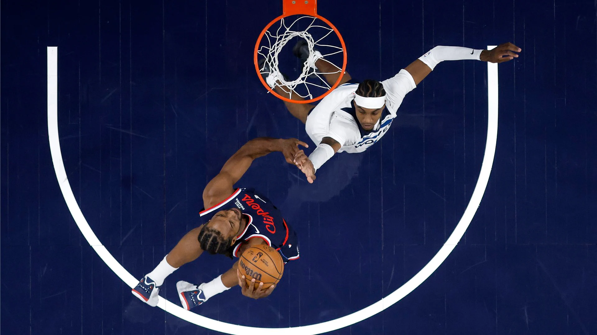

Welcome to the NBA Analytics Hub!
Explore NBA performance through an interactive analytics dashboard featuring top teams and standout players from both conferences. Compare key statistics like scoring, rebounds, assists, and efficiency using responsive flip cards designed for quick and engaging analysis.
View Team Stats
Team Stats
Explore the top six teams in the Eastern and Western Conferences with quick stat comparisons using responsive team cards.
Player Stats
View standout players from each conference with quick stat comparisons using responsive player cards.
Contact
Share feedback, favorite teams, or suggestions for future additions to the site through the contact page.